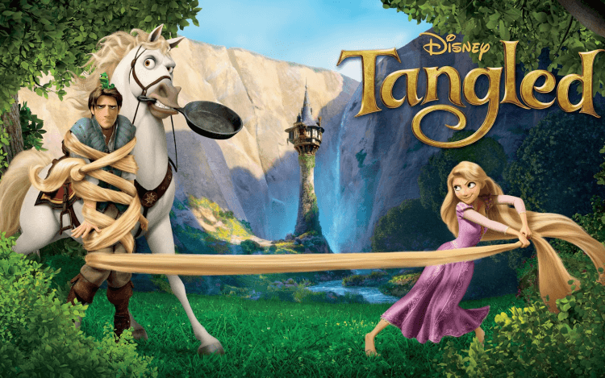

Lessons from Movies
一部好的電影值得你一看再看去思考背後的意義

比悲傷更悲傷的故事 影集版 2021
《比悲傷更悲傷的故事：影集版》是臺灣電視劇，改編自韓國電影《最悲傷的故事》以及臺灣的同名改編電影。由林孝謙、莊淳淳監製，謝沛如執導，王淨、范少勳、邵雨薇、王柏傑、曾少宗、姚以緹領銜主演
真正的悲傷就像是一首歌，不會再一開始就讓我們感到難過，而是到了副歌才像漣漪一樣，反覆堆疊出讓人難以忘懷的旋律，如果覺得悲傷來的太突然，那是因為我們常忽略了前面低吟的音符
月老 2021
月老是一部於2021年上映的臺灣愛情奇幻電影，改編自九把刀的同名小說。由九把刀親自執導兼編劇，柯震東、宋芸樺、王淨、馬志翔主演。
有些事一萬年也不會變。
等你知道什麼事情都會改變時 就是長大
魔法奇緣 Tangled 2010
You don't really need someone to complete you, you need someone to accept you completely
你的人生不需要別人來完整，而是需要一個願意接受你全部的人。
小飛俠
變老是無可避免的，但長大卻是一種選擇，不管你年紀多大，都該擁有赤子之心。
美女與野獸
人們會因為憤怒而說太多，但是否傾聽是我們的選擇。
獅子王
是阿，過去的傷痛會留下印記。但是你可以選擇逃避它，或是從中學習。
料理鼠王
別讓任何人用出身去定義你，你唯一的限制只有你的靈魂。
阿拉丁
很多時候，我們只看到別人與我們的差異，但如果再仔細看，你會發現其實我們都是一樣的。
花木蘭
在逆境中綻放的花朵，是最珍貴也是最美的。